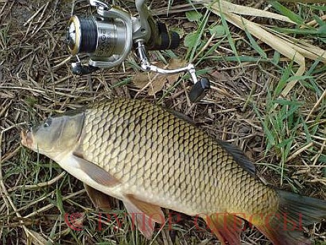

Рыбалка в Одессе и области Никакой политики. Только ты и рыба.
«Из всех наших рыб карась, бесспорно, самая неприхотливая и невзыскательная.
Карась живет в более или менее значительном количестве не только во всех озерах и прудах, но часто попадается и в полуподземных озерах, почти совершенно затянутых трясиной, и в небольших ямах, где совершенно немыслима жизнь какой-либо другой рыбы. Можно даже положительно сказать, что чем хуже свойства воды обитаемого водоема, чем иловатее пруд или озеро, тем караси многочисленнее и быстрее развиваются. Тина – их стихия.
Здесь добывают они пищу, состоящую исключительно из органических остатков и частиц, также мелких червяков. Вообще карась может водиться во всякой воде, и если иногда и бывает редок в реках и некоторых озерах, то это, конечно, все более зависит от того, что он при первом удобном случае старается уйти в более спокойные и тинистые воды. Толстое, неуклюжее тело его не может справиться и с довольно медленным течением, а при песчаном или каменистом дне ему негде добывать себе пищу и негде укрываться от хищных рыб, которые, конечно, пользуются его неповоротливостью и в скором времени вконец истребляют как его, так и его икру и молодь.
Доказательством того, что карась вовсе не боится холодной воды, может служить то, что он нередко, особенно в Уральских горах, встречается и в родниковых ямах – обстоятельство, замеченное еще покойным Аксаковым».
Рыбные места на периферии Одесской области РАЗДЕЛ - ОТДЫХ В ОДЕССЕСело Зориново - после того как Вы проехали Коминтерново, в 3-4 км. объявление на трассе: "Рыбалка" , свернуть налево на грунтовку и доехать до ставка с домиками, где на воротах написано " АКВА БАТ ". Если дождь: проехать дальше до поворота на Зориново, свернуть налево и через село проехать по жерстве до ставка. Тел. для связи: = 067 481 87 88, = 04855 9 83 62, Марина. Из опыта прошлых лет: на майские праздники домик или место лучше забить в марте, домики только по предоплате наличными на месте.
Село Егоровка. Киевская трасса, на указателе поворот налево, дорога выводит к ставку. Много карася, но мелкого, от 10 до 15 см. Ловится повсеместно, летом сбивает кукурузу за пару минут. Карп до одного кг. Можно было поймать штук 15-20 за сутки. Есть толстолоб, не видел и не слышал что бы кто то поймал. Видел только в сетях у охраны, чушки кг. по 6-8. Амур, один раз сосед вытащил на два кг. Дно сильно закоряжено, очень много зацепов, использовать более одного крючка не рекомендую. Дно твёрдое, песчаное. Многие ловят"взаброд" на поплавок. Но есть места, где относительно спокойно можно ловить на "дальний заброс". Основная рыбалка в светлое время суток, ночью карп берёт редко. Лодки разрешают только для завоза снастей, ловить строго запрещено, за этим внимательно наблюдают. Ловят на червя, в том числе на чёрного, которого можно накопать там же, на кукурузу и перловку. Летом лучше использовать макуху, все остальные насадки сбивает карась. Стоимость 20 гр. с человека. Хищной рыбы нет.
Село Мирное - находится по дороге на речку Турунчук (Беляевский район). Сразу после поворота с трассы на Беляевку. Довольно большой водоём, где водится карп, карась, пелингас, говорят что есть щука и толстолобик, но я не видел чтобы их ловили. Стоимость ловли – 10,00 грн. на полный световой день. Самое перспективное место на этом водоёме – это дамба. Ловят на спиннинги с пружинами, «заряженными» мамалыгой и бойловыми снастями. Хорошо реагирует тамошний карп на бойлы и ароматизаторы с креветочным запахом. Чтобы занять место на дамбе, нужно приезжать чуть ли не с вечера. Карпы попадаются от 1кг до 2,5 кг. Мы ловили не только на дамбе, но и ближе к мосту. Дно илистое, чистое, можно ловить и на спиннинги и на поплавочную удочку для дальнего заброса. Летом карась хорошо берёт на кашу и на хлеб. В основном с лодошку. Я знаю что в городе есть много «спецов» по ловле в этом водоёме и надеюсь, что они подяелятся с посетителями сайта своим опытом!
Село Грибовка - находится на берегу Черного моря, куррортная зона с большим количеством баз отдыха и увеселительными заведениями. Добраться можно автобусами и маршрутками, отправляющимися с рынка Южный (р-н Таирова). В районе села протекает маленькая речка Барабой, благодаря которой были созданы два небольших озера, находящиеся в частной собственности господина «Бороды». Одно озерцо, довольно глубокое, находится у выезда с села, порыбачить там стоит 40 грн., другое по площади раза в три больше, но очень мелкое, только вдоль берега идет канал с 1,5 метровой глубиной, к тому же в этом году, из-за засухи, огромное количство рыбы в этом водоёме пропало. Рыба водилась разнообразная: крупный карась (до 1 кг), карп, белый амур, толстолобик. Из хищников: судак и щука. Отличное место для рыбалки и отдыха, пока жена с шуриным и тещей нежились на берегу моря, можно было тихонько смыться на рыбалку… никто и не заметит. Стоило это удовольствие 10,0 грн. Теперь, после летней засухи и замора, сложно что то сказать. Карп, карась в Грибовке лучше всего брали на мамалыгу, поплавочной удочкой для дальнего заброса, активизировали клёв анисовые и медовые капли. Толстолобика брали, но с трудом, на технопланктон, снастью – «палочка толстолоба». Весной неплохо ловили судака и щуку с лодки, но потом хозяин запретил – слишком жирно за 10,0 грн. Ловля хищника в Грибовке довольно специфична, и ключик к добычливой рыбалке мы подбирали года два. Судака возможно поймать только при самой медленной проводке лёгкой джиг-головки с салатовым силиконом или мелкие воблеры. Причем «перепахать» дна, до поимки первого хвоста, нужно гектар. Щука водилась до 4-5 кг, но в основном попадалась травянка до 2 кг (на все что шевелиться: силикон, вращалки, воблеры…). Главный спец по Грибовскому хищнику – Женя (из Ильичёвска). Ещё хотелось бы рассказать о дяде Коле. Это бывший хозяин водоема в Грибовке, который арендовал часть р.Барабой, запустил рыбу и занимается обустройством берега. Ещё два года назад я ловил у него 800 грамовых карпиков.
Село Визирка. В самой Визирке находится два водоема: первый с лева от села (между селом и дачами, камыш со стороны дач) платный в прошлом году было 20грн в наличии карась приучен только к манке, короп, амур и толстолоб; дальше по ходу за дамбой почти в конце села еще один ставок был бесплатный но рыбы там по меньше и в наличии кажется карасик и коропчюк, но народ сидит видел забрасывали пружины) Чуть дальше по трасе (Николаевской) за Визиркой есть еще два водоема первый не большой который ближе к дороге в прошлом году расчистили и зарыбили плюс строили помосты но ловить в августе еще не давали, позже не знаю. Дальше за ним есть еще один водоем очистные сооружения там тоже есть рыба количество и стоимость не знаю. В дождь там на машине полная глина, проехать почти невозможно.
Село Дальник. Однажды мы с Славиком, моим другом, соседом и товарищем по увлечению, заехали на не большой водоёмчик в Дальнике. Это первое село после КП на 7-ом км Измаильской дороги. Маленький водоём, с камышами вдоль берега и на середине. Глубина его от 1 м до 2 м. Ловится там мелкий карась и карпики до 2 кг.Стоимость отловочных – 5,00 грн.Сначала мы ловили на мамалыгу, поплавочными удочками с двумя крючками, но местный карп хорошо научился после поклёвки залазить в самые камыши и вытащить его не возможно. Приходилось оснащать снасть одним крючком, но поклёвки были не такие частые, как хотелось бы. Но Славик подобрал ключик к местному карпу: спиннинговая снасть с маленьким кусочком макухи и одним поводком с крючком. Т.к. крючок один, то необходимо было положить наживку так, чтобы крючок не зарылся в ил. Добиться этого можно было, если в макухе просверлить отверстие и прикрепить груз с противоположной стороны от крючка. Мы сделали круз из свинцовой пластики, в ней просверлили три отверстия: два отверстия, через которые продели резинку, а по середине – для вывода поводка с крючком. С помощью такой оснастки, макуха падает на дно вверх крючком и редко перевора-чивается. Макуха расстворяется в воде, крючок освобождается и карп засасывает его вместе с пыль от расворённой макухи. Ещё один скрет в ловле карпа в Дальнике – забросы нужно делать прямо в камыши на середине водоёма! Не рядом, а в сами камыши или в окошки между камышами. Снасть проверенная – 20 мин. И поклёвка. Если привязать больше, чем один крючок – карпа не вытянешь. Свободный крючок зацепит снасть за камыши.
Село Гвардейское - находится по старой Николаевской дороге практически за жилым комплексом Чабанка/Гвардейское поворот на лево, вдоль полигона (он справой стороны) по дороге практически до конца впереди поворот на лево, до следуещего населенного пункта ( за этим поселком, вплотную к нему находятся карьеры, 5 или 6 не больших размеров 100-200 метров квадратных, глубина была 50-100 см но это зависит от наличия зимних и весенних осадков. В наличии карась размер с ладошку. Летом был в отпуске постоянно туда ездил ловил на манку и хлеб. Сетей нет и местные за этим смотрят, но на зиму говорят с сеткой ходят. Пока ставки "халявные" т.е. без оплаты. Есть один большой водоём, куда местное население летом ходит купаться. Он по глубже и там говорят есть и короп, но я туда не ходил и не видел. Не люблю шум, хотя весной можно попробовать. Дорога и подъезд к этому водоёму нормальный.
Судоремонтный завод. Если выехать с Посёлка Таирова, в сторону г.Ильичёвска, то после разводного моста через лиман и чуть дальше, мимо круговой дороги на право Вы попадёте на небольшой водоём, напротив СРЗ, Судоремонтного завода. Стоимость отловочных 10,0 грн. с одной удочки. Ловится карпик, карась, есть судак и толстолобик, а также хороший окунь. Ловят в основном карпа, на поплавочные удочки для дальнего заброса на консервированную кукурузу или мамалыгу. Попадаются екземпляры до 2 кг. У берега дно каменистое, через метров 10 идет обрыв и чистое дно, снасть нужно положить либо на подъём с глубины, либо перекинуть обрыв. К этим местам на кормёжку подходит карп. Поклевки карпа на этом водоёме очень осторжные, посему поплавок лучше ставить чувсвительный, но при этом самоогруженный, для дальнего заброса. Толстолобика на этом водоеме я подцепил только вместе с сеткой, хороший- килограмма 2. Но на спортивные снасти не ловил, поэтому врать не буду на что и как его там ловить, но то что он там есть – это факт. Судак не крупный – до 1-1,5 кг. Ловится на силикон, предпочитает салатовые виброхвосты на джигголвке. Проводка по самому дну. При этом при подъёме с обрыва на прибрежные камни, часто бывают мёртвые зацепы. Но именно тут часто случаются поклёвки. Знакомые зимой со льда хорошо ловили на мотыля 500 г окуня. Я сам не ловил, но уловы оценивал. В принципе, нормальный водоём, не далеко от города и не дорогой – можно ездить.
Гребной канал
Преимущесва ===
1. Абсолютно бесплатно(по крайней мере пока).
2. Близко от города.
3. Довольно неплохая природа.
4. Сетевиков не очень то много(там находится база по гребным видам спорта Украины).
5. Есть неплохая рыба.
Но есть один 1 явный минус - хищника нет.
Как добираться? - По той трассе, что на 7-й км, мимо Метро и далее, не сворачивая, проехав Прилиманское, за километра 2-3 после него слева идёт посадка. Вот там то и находится Гребной канал. Есть заезд машин. Что ловится? Карась(средний вес 200-300 г). Частенько попадаются и более - 500-700 г. Карп(вроде не много), белый амур (вот этот пожиратель травы бывает там очень внушительным). Также водится бычёк, плотва, краснопёрка и колюшка. Окунь раньше был, но теперь совсем не попадается! Вот, нашёл ещё один недостаток: ловле мешает бычёк и мелкая плотва, сбивая всю насадку. Прикормка у берега на поплавок поэтому неприемлема. Ловят в основном на донки на пружины с мамалыгой, кукурузу. Белый амур идёт в основном на неё. Хотя я один раз взял неплохого с берега на поплавок на перловку! Неплохо ловят с лодки карася на поплавок. Просьба ко Всем! Если там будете, не оставляйте после себя горы мусора - убирайте!
Село Краснознаменка. По Киевской трассе, после поворота с трассы, приблизительно в трёх км. центр местной жизни, магазины, кафешки. Дальше мостик, и за ним поворот направо. Там ещё км. четыре и слева ставок. Ловить можно с любого берега. С дамбы ловят карася на поплавок, там камыш и небольшие глубины. Карася ловят и "взаброд", по левому берегу в конце ставка. Там много растущих в воде деревьев.(сухих) Хорошо ловить карпа с лодки, в дальнем конце ставка в камышах, или у края камыша. Так же, с лодки ловят по всей открытой воде, но там надо знать рельеф дна, лодки расположены в хаотическом порядке, но кучно. Летом насчитывал до пятидесяти лодок на воде, основное количество лодок в дальнем конце ставка. С берега карпа ловят и с правого, и с левого берега. Мест для установки снастей довольно много. Дно чистое, твёрдое, зацепов практически нет. Ловят на червя, перловку, кукурузу, макушатники. Пробовал бойлы, ноль. "Хищникам", просьба не беспокоить, блеснить там нечего! За рыбалку с лодки + удочка брали 7 грн.(сутки) С берега 1 спининг - 7 грн. Поплавочная 3 грн.(сутки) С хозяевами не знаком, ничего сообщить не могу. Да, довольно много раков. С района Черёмушек до ставка 80 км.